Microsoft Teams Basic Forum
GitHub Repository: https://github.com/Ashot72/microsoft-teams-sso-forums
Video Link: https://youtu.be/96qBGEBub1M
This is a basic forum app for Microsoft Teams. It uses SharePoint lists as data storage. Note, the app is
not a SharePoint SPFx app embedded in Teams. You can talk to the forum bot via adaptive cards and
also search forums' topics using Teams search-based messaging extension. You can add the app to
your personal tab, to a team, chat or meeting.
For tabs in Teams, we have three different ways of authentication:
Authenticate with a pop-up
Authentication using silent authentication
Authenticate using single sign-on (SSO)
They all use the same OAuth 2.0 implicit grant flow.
We have a button to login with pop-up authentication. Usually, we hide the rest of the page and let
the user log in first and then show everything.
Silent authentication in Azure Active Directory (AAD) minimizes the number of times a user enters
his sign in credentials by silently refreshing the authentication token.
Single sign-on (SSO) is our preferred method because it makes life a whole lot easier. In this scenario,
we just ask Teams to provide us with a token, and it will do all the hard work for us. The single
sign-on is almost no code but more configuration. After all, if a person is signed in to Teams,
why should they have to sign in to your app again? Teams tab SSO allows you to automatically
sign users to your app with the same account that they use in Teams. SSO comes with some
considerations.
Enabling SSO in your Teams tab
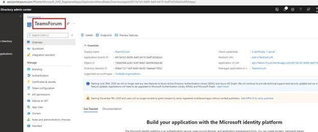
Figure 1
First, we have to register an app in the Azure portal. I registered TeamsForum app.
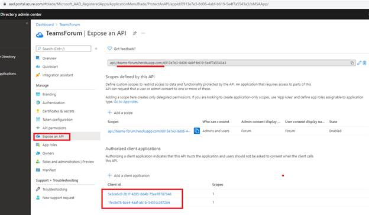
Figure 2
To enable SSO, we need to configure the API URI, define an API scope, and authorize Teams client
applications to access your app.
Application 5e3ce6c0-2b1f-4285-8d4b-75ee78787346 is Microsoft Teams Web Client.
Application 1fec8e78-bce4-4aaf-ab1b-5451cc387264 is Microsoft Teams Mobile/Desktop Client.
The app is hosted on teams-forum.herokuapp.com.
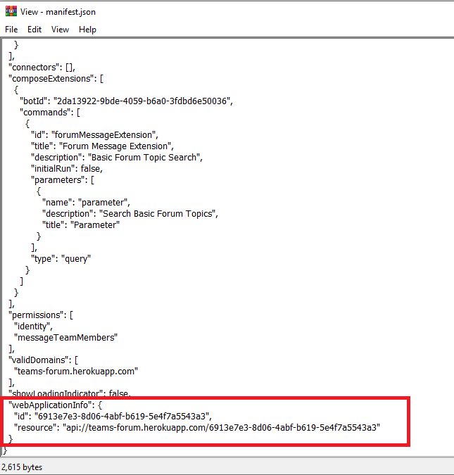
Figure 3
Next, in your Teams app's manifest, you should specify the domain where your app is hosted, the
ID of you Azure AD app, and the API URI you defined previously. Actually, manifest.json entries are
automatically generated from .env file when you run gulp ngrok-serve command for local development
or gulp manifest to deploy the app.
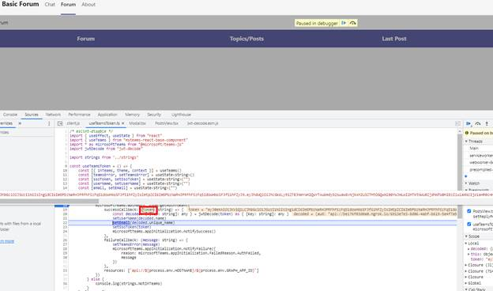
Figure 4
In app's useTeamsToken hook we receive the token. The tab SSO feature in Microsoft Teams gives
you a token, but this is just an identity token that cannot be used as an access token to call into
the Microsoft Graph, despite we grant permissions on the Tab app.
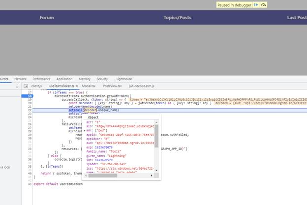
Figure 5
If we inspect the token, we get from Microsoft Teams we will see some properties.
For example, appid is the application id of issuing application and in this case the Microsoft Teams web application etc. We need to access Microsoft Graph as we work with SharePoint lists.
Exchange the Teams SSO access token for an API token using the on-behalf-of flow.
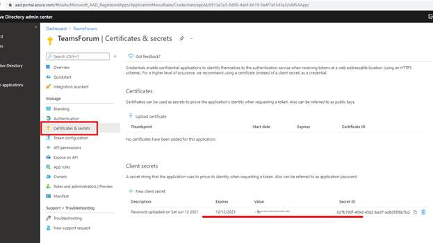
Figure 6
To exchange your Teams SSO token to call Microsoft Graph, you will need to extend your Azure AD
app registration with a secret.
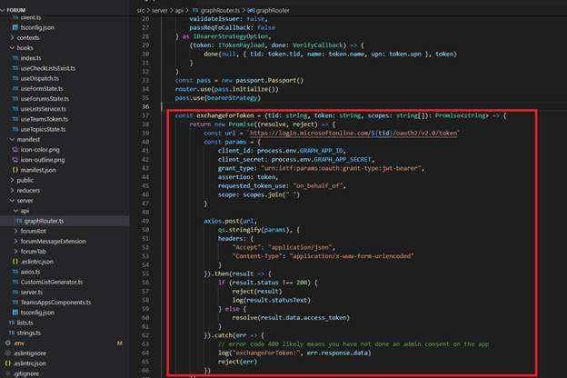
Figure 7
In our code, we need to use the on-behalf-of-OAuth flow. It is a flow that requires using your app's
secret, and which you should not do from the client. Instead, we should do it from code running on the
server where we can hide the secret from users.
Getting token for Microsoft Graph in a Teams tab with SSO.
To exchange the access token, you got from the Teams SDK as a part of Single Sign-On,
you should use the on-behalf-of OAuth flow. The Teams SDK is client-side. But the on-behalf-of
flow needs to be executed server-side because of the Azure AD app secret that you should not
expose to users. There are two ways to exchange the Teams SSO token for one to call Graph.
Exchange the token on the server and return the Graph token to the client.
The first approach is to build an API that exchanges the Teams SSO token for a Graph token
and returns it to the client. The API itself is anonymous and accepts the Teams SSO
token either via the body in a POST request on the query string.
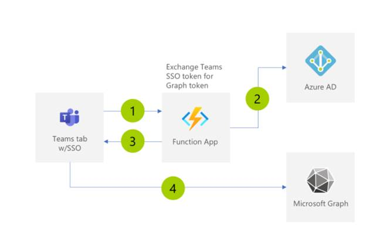
Figure 8
After completing SSO, the Teams tab calls their API to exchange its Teams SSO token for one
for Graph (1). The API calls Azure AD and exchanges the token using the on-behalf-of flow (2).
It then returns the token to the client (3) which uses it to call Microsoft Graph and retrieve data
from Microsoft 365 (4).
We do not use this approach in our Microsoft Teams Basic Forum app. We use the alternative
approach which is coming next.
Call Graph server-side and return only the data
Another way to call Microsoft Graph in a Teams tab using SSO is by building a secure API that
calls the Graph and returns to the client just the data it needs.
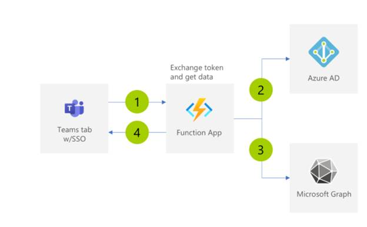
Figure 9
The basic of the setup are still the same. Your app calls the API with the Teams SSO
token (1). This time, because the API is secured with Azure AD, before the code executes,
the access token sent in the request will be validated by Azure AD. Next, the API
calls Azure AD using the on-behalf-of flow to exchange this token for one for Graph (2).
Rather than returning the token to the client, the API calls Graph (3) and returns to the
client the data it received from Graph.
The nice thing about this setup is that the API itself is secured with Azure AD and calls to
Graph are implemented on the server. The access token for Graph, obtained using the
on-behalf flow, never leaves your API and your client only gets the data it needs.
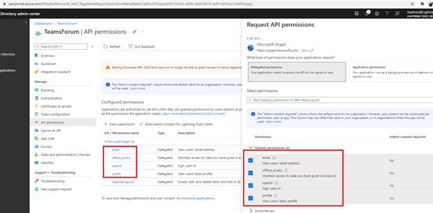
Figure 10
From Microsoft Graph API we get OpenId permissions.
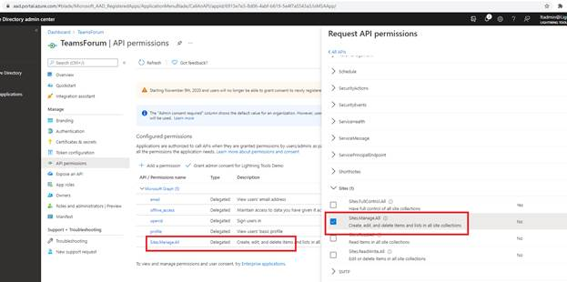
Figure 11
Next, we check Sites.Manage.All Graph permission as we create lists, create, edit, delete list items from our Teams app.
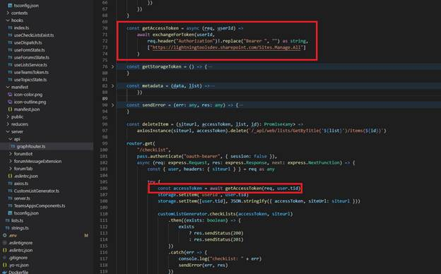
Figure 12
In our Graph router we get access token by exchanging and only return data.
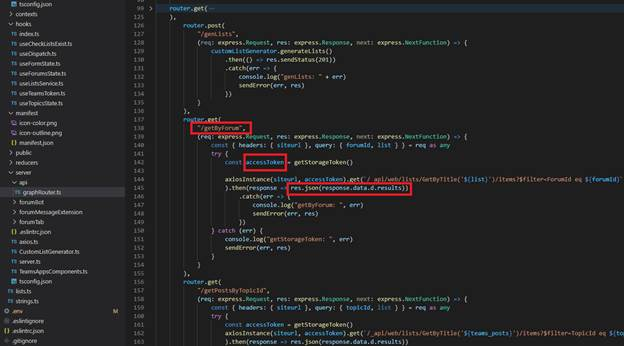
Figure 13
In getByForum call you that rather than returning the token to the client, we return the data it received from Graph.
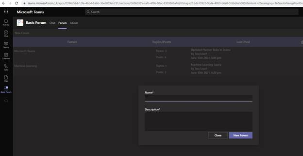
Figure 14
If you develop your app based on Fluent UI React NorthStar themable React component library then
you will get you app styling out of the box.
Fluent UI is a fairly themable component library. Theming is opt-in, allowing you to theme as much
or as little as needed. Themes can be applied to your entirely app, to specific subtrees, or to
individual components.
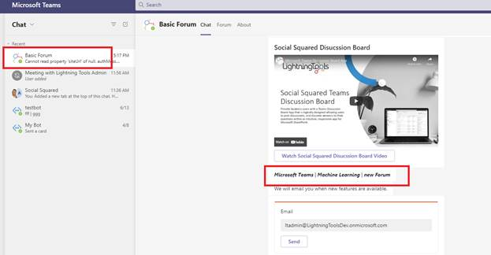
Figure 15
You can also talk to the forum bot via adaptive cards which are great fit for Bots.
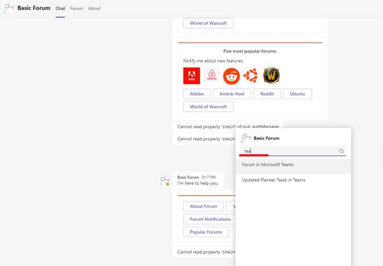
Figure 16
You can also search forums' topics via search-based messaging extension.
We discussed about Microsoft Teams tab SSO authentication, but there is not an easy way to
authenticate a Microsoft bot in Teams or a messaging extension via SSO. Despite it you see that
both the bot and messaging extension work without a problem.
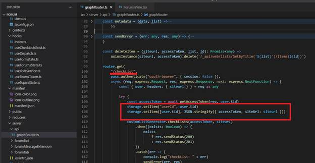
Figure 17
When you run the app and navigate to the forum's tab, the first call is checklist. App wants to make sure
that SharePoint lists exist. In that call we keep accesstoken token and sharePoint site url of the logged-on
user in a session.
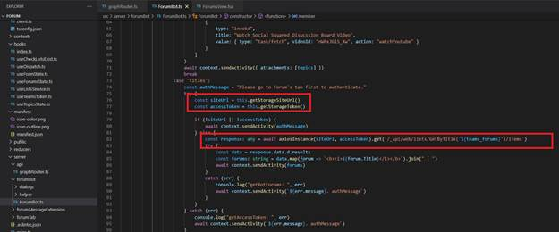
Figure 18
Both the bot and messaging extension get that required info from the session and make a call to get
forums' or topics' list items. If you try to talk to the bot or search a topic via extension without going to
the forums tab first (the access token may also be expired) then you will get the message Please go to
the Forum's tab first to authenticate. If you are in the app and navigating from forums to topics page or
back to forums or other pages exchangeForToken function (Figure 7) never called. It is called only when
you refresh the entire page or switching between Teams tabs.